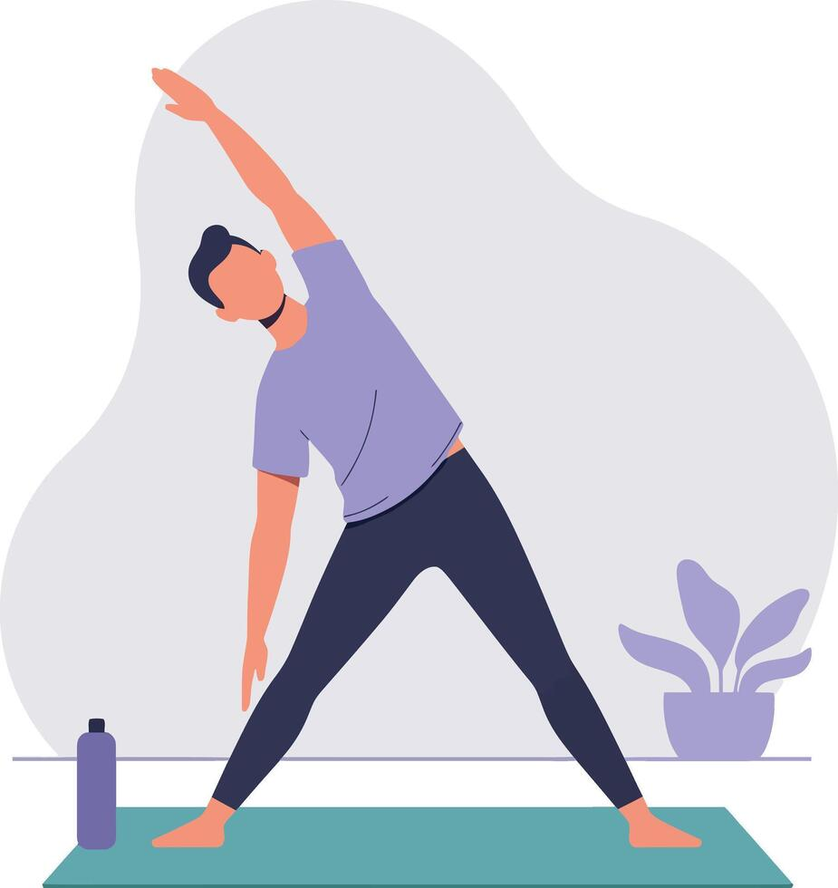

Our Mission
Well-Nest is a fitness website made for beginners who want to improve their health in a simple and realistic way. We focus on clear guidance, easy-to-follow routines, and supportive advice that can fit into everyday life.
Our goal is to make movement feel approachable. By keeping information straightforward and beginner-friendly, Well-Nest helps users build confidence and healthy habits at their own pace.
Start where you are

Trustworthy information
Well-Nest connects users with trusted outside resources that support safe, research-based physical activity. These links can help beginners learn more about exercise, wellness, and healthy routines.
Wellness inspiration
These links connect visitors to fitness-related content that matches the purpose of Well-Nest. They offer beginner-friendly motivation, movement ideas, and practical guidance outside the website.